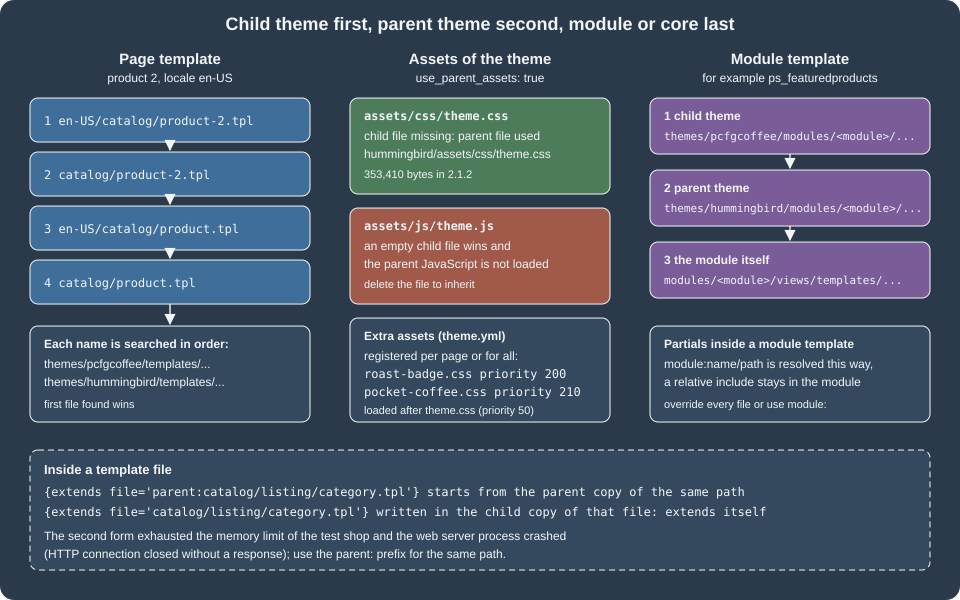

Themes: Hummingbird and Classic
|
This content was generated with the assistance of AI and should be verified against the official documentation before being relied on in production. |
A PrestaShop theme is the whole front office of a shop: the HTML templates written in Smarty, the CSS and JavaScript, the
image sizes, the layout of the pages, and the list of modules that must be hooked where. Because modules draw into the page
through hooks and the theme decides where those hooks are, a theme is also the thing that makes a module look right or wrong.
This page explains how a PrestaShop 9 theme is built and how to customise one without losing the ability to update it. It
covers the two themes that ship with 9.2.0, Hummingbird 2.1.2 (the default for new installs since 9.1) and Classic 3.1.2
(deprecated for new development), the complete theme.yml reference, layouts and template inheritance, how files are
resolved between a child theme, its parent and the modules, assets, translations, validation, export, the Bootstrap 4 to 5
migration that affects every module template, and practical guidance on theme design and SEO. The text follows the official
developer documentation, checked on 2026-10-27, and was written against PrestaShop 9.2.0 (Symfony 6.4.46, Smarty 4.5.7, PHP
8.5.12 in the Docker image).
The running example is the Pocket Coffee storefront. The page builds a child theme of Hummingbird called pcfgcoffee
that shows a roast-date badge on the product page, registers its own stylesheets, adds a "Coffee Club" page layout with a
banner, overrides the featured-products block, and declares a custom hook. The child theme was activated in a disposable
PrestaShop 9.2.0 installation (so that the shared test shop kept its own theme), and the templates, assets, layout, module
override, template resolution, export, validation and CLI behaviours described below were observed there. The section
What was run and what was not lists the exact limits. Related pages:
Hooks for the hook mechanism,
Front Controllers and Templates for module templates,
Module Translations for the translation system, and
Customers, Multistore and i18n for per-shop themes.
Hummingbird and Classic
PrestaShop 9.2.0 installs two themes in themes/: Hummingbird is the default and Classic is still shipped. The Docker image
of 9.2.0 installs Hummingbird as the active theme (ps_shop.theme_name is hummingbird). PrestaShop’s documentation states
that Hummingbird is the reference implementation for modern theme development and that Classic is deprecated for new
development; existing stores upgraded from 9.0.x keep their theme.
| Hummingbird 2.1.2 | Classic 3.1.2 | |
|---|---|---|
Status in 9.2 |
Default theme for new installs since 9.1. Compatibility declared as |
Deprecated for new development, still shipped. Compatibility |
CSS framework |
Bootstrap 5.3.3 ( |
Bootstrap 4.0.0-alpha.5 ( |
Theme JavaScript |
TypeScript compiled with webpack 5, no jQuery in theme code, |
jQuery based |
CSS architecture |
SCSS with CSS |
Bootstrap 4 SCSS |
Layout templates |
Six: |
Six, same names |
Template files |
161 |
144 |
Image types declared |
17 |
7 |
|
353,410 bytes |
196,290 bytes |
|
211,560 bytes |
204,440 bytes |
Accessibility |
Built to the European Accessibility Act, ARIA and keyboard navigation documented |
Not documented for Classic |
Build tools |
Node (the |
Compiled assets are shipped, no source folder in the package |
Dark mode |
Bootstrap 5.3 colour modes |
Not documented for Classic |
Source: PrestaShop devdocs: Hummingbird
The numbers in the table were read from the files of the 9.2.0 image: config/theme.yml, the templates/ trees and the
assets/ folders. Both themes load themes/core.js (131,542 bytes), which still brings jQuery and the prestashop event
object for module compatibility; Hummingbird’s own code does not use jQuery. The official themes documentation says
Hummingbird needs Node.js 20.x, while the 2.1.2 package.json declares engines.node >= 24 and the 9.2.0 release notes mention
Node 24 and npm 11. The shop image has no Node, so the Hummingbird source build was not run; building a child theme that only
contains templates and plain CSS needs no build at all, which is the approach used in this page.
Classic’s templates and Hummingbird’s templates share most file names and the same Smarty block names in the page layouts, so a module that only renders content through hooks usually works in both. What differs is the markup inside the templates, the Bootstrap version and the hooks that exist (see From Bootstrap 4 to Bootstrap 5 and the hook table below).
Hook changes between the themes
| Change | Detail |
|---|---|
|
Removed from Hummingbird; the search bar module is hooked to |
|
Replaces the legacy |
|
New in Hummingbird 9.1 for modal windows. |
|
Called by Hummingbird 2.1.2 in the order detail product line. |
|
New image type in 2.1.2 (98 x 98, fitment |
Image fitment |
Image types can declare |
Anatomy of a theme
A theme is a folder in themes/ named exactly like the name key of its config/theme.yml:
themes/pcfgcoffee/
├── assets/
│ └── css/
│ ├── pocket-coffee.css
│ └── roast-badge.css
├── config/
│ └── theme.yml
├── modules/
│ └── ps_featuredproducts/views/templates/hook/ps_featuredproducts.tpl
├── templates/
│ ├── catalog/product.tpl
│ └── layouts/layout-club.tpl
└── preview.pngThe documented folders of a complete theme are assets/ (css/, js/, plus img/ and fonts/ by convention), config/
(theme.yml), modules/ (overrides of module templates and assets), plugins/
(custom Smarty plugins), templates/ (with _partials/, catalog/, checkout/, cms/, components/, customer/, errors/ and
layouts/), translations/ and preview.png (500 x 746 pixels, shown in the back office theme selector). Source directories for
the build (src/, _dev/) are not part of a distributed theme. The child theme above contains only what it changes: PrestaShop
finds everything else in the parent.
Hummingbird’s templates/ tree has these top-level groups: _partials/ (head, header, footer, breadcrumb, notifications,
pagination, microdata), catalog/ (product, listing pages, miniatures, filters), checkout/ (cart, steps, order confirmation),
cms/, components/ (title sections, toasts, quantity input, progress circle, module product lists), customer/ (account pages
and forms), errors/, layouts/, and contact.tpl, index.tpl, page.tpl at the root.
The theme.yml reference
config/theme.yml is required: PrestaShop uses it to recognise and configure the theme. The table lists every key found in
the documentation and in the two shipped themes.
| Key | Meaning | Notes |
|---|---|---|
|
Technical name. |
Must equal the folder name. |
|
Name shown in the back office. |
|
|
Theme version. |
|
|
Author. |
|
|
Name of the parent theme folder. |
Makes this a child theme. |
|
PrestaShop version range and CSS framework. |
|
|
Layouts the back office offers, with |
Required; the keys are file names in |
|
Child themes: load the parent’s assets. |
With |
|
Extra stylesheets and scripts, per page key or |
Page key is the controller’s |
|
Configuration values written when the theme is activated. |
For example |
|
Modules enabled (installed if needed), disabled or reset at activation. |
Hummingbird disables |
|
New hooks to register ( |
|
|
Modules attached to hooks at activation, |
Applied only at activation. |
|
Modules detached from hooks at activation. |
Applied only at activation. |
|
Image sizes: |
The six legacy types are required: |
|
Layout used when a page has none. |
Required. |
|
Layout per page key. |
Hummingbird sets |
|
Generate RTL stylesheets at activation. |
|
|
|
Removes the |
|
Modules bundled when the theme is exported. |
Layout choices made in Design > Theme & Logo > Choose layouts are saved, according to the documentation, in a settings_<shopId>.yml file, and theme.yml stays unchanged;
the shop id in the file name is what makes the choice per shop in a multistore installation.
What Hummingbird’s theme.yml does at activation
Hummingbird’s file sets configuration values (four products on the home page, PSR_ICON_COLOR, PSR_TEXT_COLOR for the
reassurance block), disables three modules, moves modules between hooks (ps_searchbar and ps_mainmenu into displayTop,
ps_languageselector, ps_currencyselector, ps_customersignin and ps_shoppingcart into displayNav2, the home blocks into
displayHome, the footer blocks into displayFooterBefore, displayFooter and displayFooterAfter) and declares 17 image
types. Activating a theme replaces every existing image type with the list in its theme.yml and does not regenerate the
images. In the test installation, activating Classic after Hummingbird left 7 image types in ps_image_type (Classic’s six
legacy types and stores_default) and Hummingbird’s 17 returned when it was activated again (count 17 after the switch back); after any switch run
Design > Image Settings > Regenerate thumbnails, or bin/console prestashop:thumbnails:regenerate.
Required properties and files
The validator ThemeValidator runs before activation. It requires the 13 properties name, display_name, version,
author.name, meta.compatibility.from, meta.available_layouts, the six global_settings.image_types.* legacy types and
theme_settings.default_layout, and 32 files: preview.png, config/theme.yml, assets/css/theme.css, assets/js/theme.js,
templates/index.tpl, templates/contact.tpl, templates/_partials/form-fields.tpl, the product, product list, cart, cart empty,
checkout and order confirmation templates, the four cms/ templates, the thirteen customer/ templates and errors/404.tpl and
errors/forbidden.tpl. For a child theme, each file is looked for in the child and then in the parent, so a missing file is
an error only if both lack it. The properties are not looked up in the parent.
That last point contradicts the "minimal child theme" in the developer guide, which lists only theme.yml and preview.png
and a three-line theme.yml. The first child theme built for this page failed:
$ bin/console prestashop:theme:enable pcfgcoffee
[ERROR] The selected theme "pcfgcoffee" is invalidand the validator’s error list (obtained with the ThemeValidator service) was:
An error occurred. The information "global_settings.image_types.cart_default" is missing.
An error occurred. The information "global_settings.image_types.small_default" is missing.
An error occurred. The information "global_settings.image_types.medium_default" is missing.
An error occurred. The information "global_settings.image_types.large_default" is missing.
An error occurred. The information "global_settings.image_types.home_default" is missing.
An error occurred. The information "global_settings.image_types.category_default" is missing.Copying the image_types block of the parent into the child’s theme.yml fixed it: the theme was enabled, ps_shop.theme_name
became pcfgcoffee and ps_image_type held the 17 types. A child theme therefore carries its own image-type list, which is
reasonable because activation replaces the shop’s image types with it.
Layouts and template inheritance
Layouts and page templates
A layout (templates/layouts/layout-*.tpl) is the HTML shell: <html>, <head>, <body>, the header, the breadcrumb, the
columns and the footer. A page template (catalog/product.tpl, index.tpl, checkout/checkout.tpl) extends the layout held in
the Smarty variable $layout, which the front controller sets from the theme settings, and fills the blocks. Hummingbird’s
layout-both-columns.tpl is the root; it declares 21 named blocks: head, top_content, skip_to_main_content,
hook_after_body_opening_tag, product_activation, header, breadcrumb, main_content, notifications, content_columns,
container_class, left_column, content_wrapper, content, right_column, footer, javascript_bottom, bottom_elements,
hook_before_body_closing_tag, modal_container and back_to_top. The other layouts only redefine the column blocks.
The dotted arrows are the {extends file=$layout} of the page templates, which change with the layout chosen for each page;
the solid arrows are fixed {extends file='...'} relations. All of this was read from Hummingbird 2.1.2: layout-full-width,
layout-left-column, layout-right-column and layout-content-only each extend layout-both-columns, page.tpl,
catalog/product.tpl, catalog/listing/product-list.tpl, checkout/checkout.tpl and index.tpl extend $layout,
cms/page.tpl and contact.tpl extend page.tpl, and catalog/listing/category.tpl extends catalog/listing/product-list.tpl.
Block strategies
A child template redefines only the blocks it needs. Smarty has three strategies, all of which were used in the child theme:
| Strategy | Syntax | Effect |
|---|---|---|
Replace |
|
Replaces the parent’s block. |
Append |
|
Parent content first, then yours. |
Prepend |
|
Yours first, then the parent content. |
Parent reference |
|
Inserts the parent’s content at a chosen position. |
Child reference |
|
Wraps what children inject. |
The Pocket Coffee product template appends the roast-date badge after the price block and exposes a custom hook for modules:
{extends file='parent:catalog/product.tpl'}
{block name='product_prices' append}
{foreach from=$product.grouped_features item=feature}
{if $feature.name === 'Roast date'}
<p class="roast-badge" data-ps-ref="roast-badge">
<span class="roast-badge__label">{l s='Roasted on' d='Shop.Pocketcoffee'}</span>
<span class="roast-badge__date">{$feature.value}</span>
</p>
{/if}
{/foreach}
{hook h='displayPcfgRoastBadge' product=$product}
{/block}With the product feature Roast date = 2026-10-26 attached to product 1, the rendered page contained:
<p class="roast-badge" data-ps-ref="roast-badge">
<span class="roast-badge__label">Roasted on</span>
<span class="roast-badge__date">2026-10-26</span>
</p>The Coffee Club layout prepends a banner to the breadcrumb block of the full-width layout and is assigned to the CMS pages
through theme_settings.layouts.cms:
{extends file='layouts/layout-full-width.tpl'}
{block name='breadcrumb' prepend}
<div class="club-banner">
{l s='Coffee Club members get 10% off beans and free shipping above 40 EUR' d='Shop.Pocketcoffee'}
</div>
{/block}The delivery page (a CMS page) then had <body id="cms" class="... layout-club page-cms ..."> and contained the banner.
The parent: prefix and self-extension
A child template with the same path as a parent template replaces it. To start from the parent version of the same path,
extend it with the parent: prefix, as the product template above does. Without the prefix, {extends file='catalog/listing/category.tpl'}
written inside the child’s catalog/listing/category.tpl points at itself. In the test shop this was not a Smarty error: the
request died, the Apache log reported child pid ... exit signal Segmentation fault and a PHP fatal error Allowed memory size of 536870912 bytes exhausted
in Smarty’s inheritance runtime, and the client received no response at all. With the parent: prefix the same template
rendered normally. Extending a different base template (the catalog/listing/category-4.tpl below extending catalog/listing/category.tpl) is
fine.
Template resolution order
PrestaShop looks for a page template by locale and entity id, from the most specific name to the default, and each name is searched
in the active theme first and in its parent second. For product 2 in en-US the order is:
-
en-US/catalog/product-2.tpl -
catalog/product-2.tpl -
en-US/catalog/product.tpl -
catalog/product.tpl
Listing pages add a fallback to catalog/listing/product-list.tpl. In developer mode every template is wrapped in HTML comments
that name the file that was actually used, which makes the order easy to confirm. Three files were created in the child theme
(templates/catalog/listing/category-4.tpl, templates/catalog/product-1.tpl and templates/en-US/catalog/product-2.tpl) and the
three pages showed <!-- begin catalog/listing/category-4.tpl, <!-- begin catalog/product-1.tpl and
<!-- begin en-US/catalog/product-2.tpl, while the other products kept using catalog/product.tpl. An empty template file
renders nothing: an empty override replaces the page with a blank one, which is how the first attempts at these files looked
before they received content.

Assets
Core assets and registration
PrestaShop loads theme.css (id theme-main, priority 50), rtl.css for RTL languages (900), custom.css (1000), core.js
(priority 0), theme.js (50) and custom.js (1000) on every page. Use custom.css and custom.js for quick overrides in a theme
that is not compiled.
Extra files are registered in theme.yml (per page key or all), from a module with actionFrontControllerSetMedia, or in a
controller’s setMedia():
assets:
use_parent_assets: true
css:
product:
- id: pcfg-roast-badge
path: assets/css/roast-badge.css
media: all
priority: 200
all:
- id: pcfg-custom
path: assets/css/pocket-coffee.css
priority: 210The product page of the test shop loaded the parent’s theme.css, then roast-badge.css and pocket-coffee.css from the child; the
home page loaded only pocket-coffee.css from the child. The options are:
| Stylesheet option | Meaning |
|---|---|
|
CSS media type, default |
|
0 to 999, lower is earlier, default 50. Equal values keep registration order. |
|
Put the content in a |
|
Cache-busting query string. |
|
Load the |
| JavaScript option | Meaning |
|---|---|
|
|
|
0 to 999. |
|
Inline |
|
|
|
|
|
Cache-busting string. |
Registering an id that already exists replaces the asset with that id. To remove an asset of a module, register nothing under its
path by placing an empty file at themes/<theme>/modules/<module>/views/css/style.css (only for local, relative paths), or call
unregisterStylesheet('id') and unregisterJavascript('id') from actionFrontControllerSetMedia.
The child theme and theme.js
With use_parent_assets: true the parent’s compiled theme.css and theme.js are used. The rule PrestaShop applies is per file: it takes
the child’s file if it exists and the parent’s file otherwise. That has a consequence that cost an hour in the test: the first version of the
child theme contained an empty assets/js/theme.js (created to satisfy the idea that the validator wants it), and the product page then
loaded the child’s empty script at the end of the page and none of Hummingbird’s 211,560-byte theme.js, so every interaction of the
theme was gone. After the empty file was deleted the page loaded themes/hummingbird/assets/js/theme.js. The same holds for theme.css: do not
create the file in a child theme unless you mean to replace the parent’s stylesheet (in that case use_parent_assets is usually
false). A child with its own styles uses the registered files above and leaves theme.css and theme.js to the parent.
Compiling Hummingbird and the CSS architecture
If you fork Hummingbird instead of using a child theme, the source is TypeScript and SCSS built with webpack. The scripts are npm ci,
npm run build, npm run watch, npm run lint, npm run stylelint, npm run format, npm run test (Jest) and npm run storybook.
Edit src/scss/ and src/js/, not the compiled assets/ output. The SCSS layout is abstract/ (variables, mixins),
bootstrap/ (variable overrides and component restyling), prestashop/ (base/, components/, layout/, modules/, pages/) and
vendors/, with entry points theme.scss, rtl.scss and error.scss. theme.scss fixes the CSS layer order:
@layer vendors, bs-base, bs-components, bs-custom-components, ps-base, ps-components, ps-pages, ps-modules, utilities;Unlayered CSS, for example from modules, wins over layered CSS; this is intentional for backward compatibility. Custom classes follow BEM
(.product-card, .product-card__title, .product-card--featured), selectors use classes only, no ids or tag selectors, and
JavaScript hooks use data-ps-* attributes (data-ps-ref, data-ps-action, data-ps-target, data-ps-component, data-ps-state,
data-ps-context, data-ps-observe, data-ps-data) rather than js- classes, although both coexist in 2.1.2. Events travel through the
prestashop object: prestashop.on('updatedProduct', fn), prestashop.emit('myEvent', data), with constants in Theme.events.
Module overrides in a theme
A theme can replace a module’s templates, CSS and JavaScript by mirroring the module’s paths under themes/<theme>/modules/<module>/.
PrestaShop uses the theme file when it exists and falls back to the module. Hummingbird itself overrides the templates of core modules
this way (its modules/ folder holds blockreassurance, blockwishlist, contactform, productcomments, ps_banner, ps_bestsellers and many more),
and the child theme’s lookup is child, then parent, then module.
The Pocket Coffee override changes the title and CSS name of the featured-products block. Hummingbird’s own override extends
components/module-products.tpl; the child extends the same base:
{extends file='components/module-products.tpl'}
{block name='module_products_name'}pcfg-featured-beans{/block}
{block name='module_products_title'}
{include file='components/section-title.tpl' title={l s='Our beans' d='Shop.Pocketcoffee'}}
{/block}The home page then contained <section class="pcfg-featured-beans"> and <h2 class="section-title">Our beans</h2>, with the dev comment
<!-- begin module:ps_featuredproducts/views/templates/hook/ps_featuredproducts.tpl -->. The other modules the child did not touch,
for example ps_contactinfo, still rendered from the parent (<!-- begin /var/www/html/themes/hummingbird/modules/ps_contactinfo/nav.tpl -->).
Two rules matter. A template that includes a partial with a relative path ({include file='./_partials/card.tpl'}) always loads the partial
from the module, so a theme override of the partial is ignored; a module that includes with the module: prefix
({include file='module:ps_featuredproducts/views/templates/front/_partials/card.tpl'}) goes through the override chain. And an empty
override file tells PrestaShop to render nothing for that template: use it only as a last resort.
Hooks in themes
Templates call hooks with {hook h='displayFooter'} and the optional mod and excl parameters; extra parameters are passed on to the
modules. Themes can register hooks of their own in theme.yml:
global_settings:
hooks:
custom_hooks:
- name: displayPcfgRoastBadge
title: Pocket Coffee roast badge
description: Shown next to the price of a product that has a roast date.After activation the hook existed in ps_hook (id 1267 in the test shop) and a module can attach to it with
registerHook('displayPcfgRoastBadge'). modules_to_hook and modules_to_unhook run only at activation, so changing them in an
already active theme does nothing until the theme is re-activated. Hummingbird publishes visual maps of its front-office hooks per page
(home, category, product, cart, checkout flow, my account, contact, login).
Source: PrestaShop devdocs: Theme hooks
Translations
Wordings in templates use {l} with a domain: {l s='Read more' d='Shop.Pocketcoffee'}. The theme part of the domain starts with a capital
letter and has no other capitals (Shop.Mytheme is right, Shop.MyTheme is not). Core domains such as Shop.Theme.Actions,
Shop.Theme.Catalog, Shop.Theme.Checkout and Shop.Theme.Global are already translated in the language packs, so reuse them for
"Add to cart" and similar. The sprintf parameter inserts values, js=1 escapes for JavaScript, and translated strings reach scripts through a
Smarty-rendered variable. In International > Translations, install the languages first (Add / Update a language), then choose Front office
translations, the theme and the language to fill in the theme’s own domain. Export a language to put the .xlf files in the theme’s
translations/ folder, which is bundled when the theme is exported. The full list of Smarty helpers: {l}, {url}, {hook}, {render},
{form_field}, {widget}, {widget_block} and the modifiers classname and classnames.
RTL: when an RTL language is active the <body> gets the class lang-rtl and PrestaShop loads rtl.css (priority 900) and the _rtl
variant of each stylesheet. Design > Theme & Logo > Adaptation to right-to-left languages generates _rtl.css files and never overwrites an
existing one; put corrections in a .rtlfix file with the same name as the original. Prefer CSS logical properties (margin-inline-start).
From Bootstrap 4 to Bootstrap 5
Classic uses Bootstrap 4, Hummingbird uses Bootstrap 5.3. Modules written for 1.7 and 8.x assume the BS4 markup, and the PrestaShop
documentation lists the three families of breaking changes: attributes are namespaced (data-toggle becomes data-bs-toggle,
data-target becomes data-bs-target), utility classes are renamed (.ml-* and .mr-* become .ms-* and .me-*, .pl-* and .pr-* become
.ps-* and .pe-*, .sr-only becomes .visually-hidden, .float-left and .float-right become .float-start and .float-end,
.text-left and .text-right become .text-start and .text-end, .badge-* becomes .text-bg-*), and jQuery is no longer a dependency
of the framework ($('#modal').modal() becomes bootstrap.Modal). Without changes, a BS4 module in Hummingbird loses spacing and its
modals and tooltips stop opening.
| BS4 | BS5 | Note |
|---|---|---|
|
|
Namespaced data attributes. |
|
|
Logical start and end. |
|
|
Screen-reader text. |
|
grid and spacing utilities |
|
|
|
|
|
|
No jQuery plugin interface without a bridge. |
The Bootstrap Compatibility Layer is a separate npm package, not part of Hummingbird. It is a runtime shim that maps data-* to data-bs-*,
renames the utility classes and bridges the jQuery plugins; a module includes it from actionFrontControllerSetMedia. The documentation
calls it a temporary patch: new modules for PrestaShop 9 should use BS5.3 markup directly. The migration guide of Bootstrap lists every change.
Building the Pocket Coffee child theme
Create, validate, activate
The following steps were run in the disposable 9.2.0 installation. The theme folder was copied to themes/pcfgcoffee and given to the web user.
# themes/pcfgcoffee/config/theme.yml
parent: hummingbird
name: pcfgcoffee
display_name: Pocket Coffee
version: 1.0.0
author:
name: "Pocket Coffee"
url: "https://example.com"
meta:
compatibility:
from: 9.2.0
to: ~9.2.0
framework: bootstrap-v5.3.3
available_layouts:
layout-full-width:
name: Full Width
description: No side columns, ideal for product pages.
layout-both-columns:
name: Three Columns
description: One large central column and 2 side columns.
layout-left-column:
name: Two Columns, small left column
description: Two columns with a small left column
layout-right-column:
name: Two Columns, small right column
description: Two columns with a small right column
layout-club:
name: Coffee Club
description: Full-width page with a club banner above the content.
assets:
use_parent_assets: true
css:
product:
- id: pcfg-roast-badge
path: assets/css/roast-badge.css
media: all
priority: 200
all:
- id: pcfg-custom
path: assets/css/pocket-coffee.css
priority: 210
global_settings:
image_types:
cart_default: { width: 125, height: 125, scope: [products] }
small_default: { width: 98, height: 98, scope: [products, categories, manufacturers, suppliers] }
medium_default: { width: 452, height: 452, scope: [products, manufacturers, suppliers] }
large_default: { width: 800, height: 800, scope: [products, manufacturers, suppliers] }
home_default: { width: 250, height: 250, scope: [products] }
category_default: { width: 180, height: 180, scope: [categories] }
# ... the remaining image types of the parent (stores_default, default_xs ... manufacturer_product_page)
hooks:
custom_hooks:
- name: displayPcfgRoastBadge
title: Pocket Coffee roast badge
description: Shown next to the price of a product that has a roast date.
theme_settings:
default_layout: layout-full-width
layouts:
cms: layout-clubdocker cp pcfgcoffee ec-ps:/var/www/html/themes/
docker exec ec-ps chown -R www-data:www-data /var/www/html/themes/pcfgcoffee
docker exec -u www-data -w /var/www/html ec-ps php bin/console prestashop:theme:enable pcfgcoffee
# [OK] Theme "pcfgcoffee" enabled with success.After activation: ps_shop.theme_name was pcfgcoffee, the product page carried the badge, the child’s two stylesheets and the parent’s
theme.css and theme.js, the home page showed the pcfg-featured-beans section, and the CMS pages used the layout-club body class. During
development, set Smarty to force compilation (Advanced Parameters > Performance) and disable CCC so that CSS and JavaScript are served as separate
files; the image default of PS_CSS_THEME_CACHE=1 combines them into assets/cache/theme-*.css.
Export and distribution
bin/console prestashop:theme:export pcfgcoffee (or Design > Theme & Logo > Export current theme) writes a ZIP. The command printed
Your theme has been correctly exported: /var/www/html/themes/pcfgcoffee.zip. The archive contained every file of the theme folder, an
index.php guard in each directory, the module overrides and a translations/en-US/ folder generated for the theme. There is no exclusion list
for files: clean node_modules/, .git/, source folders, IDE and CI files and any assistant-context files before exporting. Test activation on a
clean installation and keep preview.png at 500 x 746 pixels. The Addons marketplace requires its own validation; the developer documentation has no
theme checklist for Addons in 9.x, only the generic validation described above.
Switching themes from the command line
prestashop:theme:enable is the only theme command besides prestashop:theme:export. In 9.2.0 it failed in the test installation with
Cannot build Language context as no languageId has been defined whenever activating the theme had to change the state of a module: switching from
Classic to Hummingbird failed while blockwishlist was enabled (Hummingbird disables it), and switching to Classic failed while it was disabled.
Disabling or enabling the module first with bin/console prestashop:module disable blockwishlist (or enable) made the same command succeed.
The cause is in the command class: prestashop:module prepares the language context through ContextBuilderPreparer, prestashop:theme:enable
does not. Activating from the back office is not affected, and a script can call
$container->get(ContextBuilderPreparer::class)->prepareLanguageId(1) before dispatching EnableThemeCommand.
Theme design and SEO practice
The official documentation explains how to build a theme; the books in the field (Hashim for PrestaShop 1.3, Pérez Castaño for 1.6, Ballard for
Shopify) explain how to design one. Their advice is still sound once their code is replaced by the current architecture. The older books
describe themes made of header.tpl, footer.tpl and CSS files such as global.css, maintenance.css and scenes.css edited by hand,
and modules positioned with "transplanting" in the back office; none of that applies to a Symfony-era theme with theme.yml, layouts and Smarty inheritance,
and none of them covers Bootstrap 5, @layer, accessibility regulations or JSON-LD.
Page by page
-
Home: the one decision is what the first screen proves. For Pocket Coffee that is a roast calendar, the three origins and the club offer. Home blocks are modules hooked to
displayHome; choose their order inmodules_to_hookand keep the number of blocks small, since each one is a database query and an image set. -
Category (listing): filters, sort order and a short description above the products. Hummingbird’s listing template is built from blocks (
product_list_header,product_list_top,product_list_active_filters,product_list,product_list_bottom,product_list_footer), so a theme customises one block instead of copying the page. Give each category a unique title, meta description and friendly URL: the SEO recipes for categories and products in PrestaShop Recipes use the same fields that PrestaShop still has in the category and product forms. -
Product: the information hierarchy is photo, name, price and availability, the add-to-cart control, a short description, then the long description, features and reviews. Ballard’s hierarchy argument fits the Hummingbird template, which orders
product_cover_thumbnails,product_header,product_prices,product_description_short,product_customization,product_buy,product_variants,product_add_to_cart,product_additional_info,product_tabsandproduct_footer. A roast date belongs next to the price, which is why the example appends toproduct_prices. -
Cart and checkout: reduce choices. Core features (guest checkout, a single-page flow in 9.2 behind a flag) and the theme’s checkout templates must be tested together; a theme that rewrites the checkout markup also has to keep the selectors that the One Page Checkout module expects.
-
Account and content pages: use layouts for variety instead of copying templates; the CMS layout
layout-clubshows a banner on content pages only.
SEO in the theme
Hummingbird’s _partials/head.tpl is the place to look. The same blocks produced these tags on the product page of the test shop:
-
the
<title>and<meta name="description">from the page meta ($page.meta.title,$page.meta.description), editable per category, product and CMS page in the back office, and<meta name="robots">when the page is notindex; -
<link rel="canonical" href="http://localhost:8091/1-hummingbird-printed-t-shirt.html">; -
a
<link rel="alternate" hreflang="...">for every active language, for examplehreflang="en-us"andhreflang="es-es"pointing at the English page and/es/1-hummingbird-printed-t-shirt.html; -
Open Graph tags
og:title,og:description,og:url,og:site_name,og:typeand, on products,og:image; -
five
application/ld+jsonscripts on a product page:Organization,WebSitewith aSearchAction,WebPage,BreadcrumbListandProduct. In 9.2 the core builds structured data and the theme prints$structured_data; the legacy partials under_partials/microdata/remain as a fallback and are announced as to be removed; -
_partials/pagination-seo.tpl, which computes the previous and next page URLs of a paginated listing from the canonical URL, and_partials/preload.tpl, which prints the build-generatedassets/preload.htmlwith the theme path fixed.
SEO habits that belong in theme work: one <h1> per page (Hummingbird prints the product name as h1 and uses h2 for section titles), friendly URLs
on, a sitemap (a CMS page and a module), canonical URLs for filtered listings, image alt text from the product, and speed. The books tie speed to SEO
(PrestaShop Recipes has a chapter on it); for a theme that means few render-blocking files (the build produces one theme.css), sized images from image_types with default_xs to default_xl for responsive sets, product_main and product_main_2x for retina
screens, and the CCC options in Advanced Parameters > Performance in production.
Accessibility
Hummingbird is written against the European Accessibility Act: landmark elements (<nav>, <main>, <header>, <footer>), a "skip to main
content" link (layout-both-columns has the block skip_to_main_content), aria-label on regions, keyboard navigation and visible focus. A child
theme inherits all of it and should not remove it; custom templates follow the coding standards: semantic HTML5, BEM classes, 2-space indentation,
<button> for actions and <a> for navigation.
What was run and what was not
-
Run in a disposable 9.2.0 installation: creating the child theme, the validation error list, enabling the theme from the command line, product, category and CMS pages in the shop, template resolution by entity id and locale,
appendandprepend,parent:extension and the self-extension crash, the module override and parent fallback, the two registered stylesheets, thetheme.jsinheritance, the custom hook,prestashop:theme:exportand the archive listing, the comparison of the asset files of both themes, and the switch to Classic and back with theblockwishlistobservation. -
Run in the shared shop, read only: the file trees,
theme.ymland templates of the installed Hummingbird and Classic themes. -
Not run: building Hummingbird from source (Node is not in the shop image), uploading a ZIP through the back office, the layout chooser and the generated
settings_<shopId>.yml, RTL generation, Storybook, Addons validation and the One Page Checkout templates. -
Docs inconsistencies: the minimal child theme in the guide does not pass validation in 9.2.0 without
image_types; the requirements page says Node 20.x while the Hummingbird 2.1.2package.jsonneeds 24 or newer.
References
-
Hayati Hashim, PrestaShop 1.3 Theming Beginner’s Guide, Packt, 2010 (legacy theme architecture)
-
Arnaldo Pérez Castaño, PrestaShop Recipes, Apress, 2017 (theme development, SEO and speed recipes for 1.6)
-
Gavin Ballard, The Definitive Guide to Shopify Themes, Apress, 2017 (design principles and page information hierarchy)